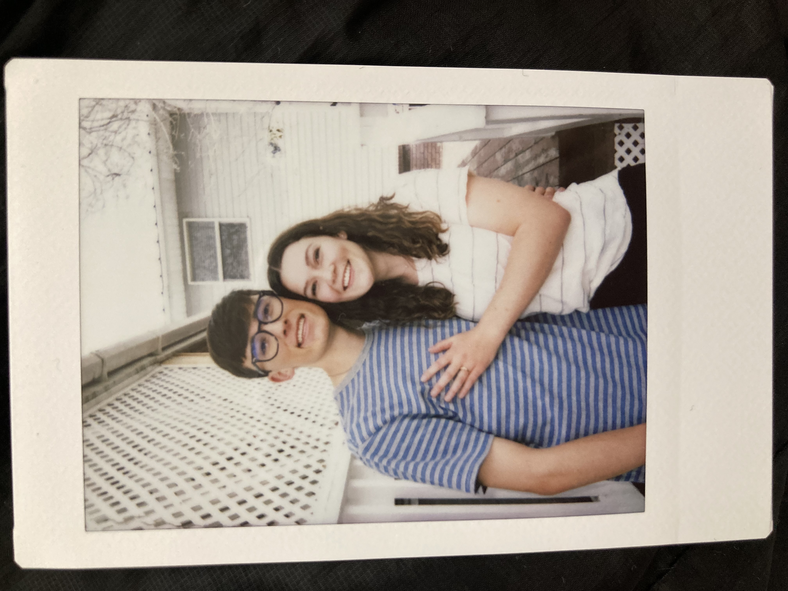
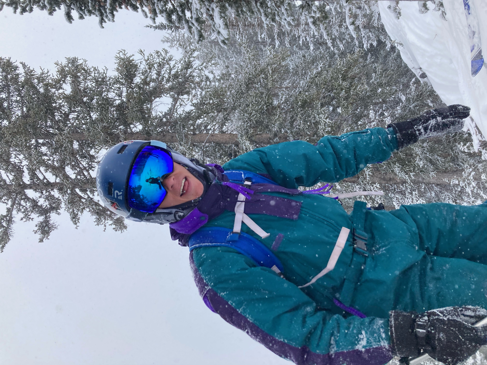
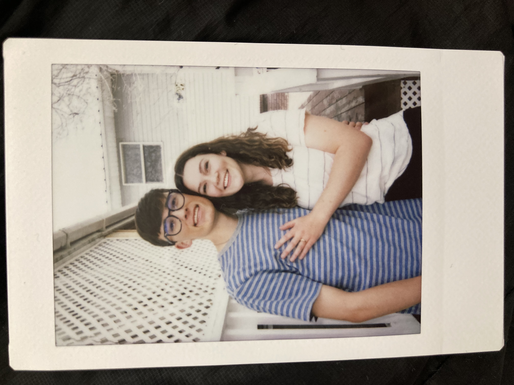
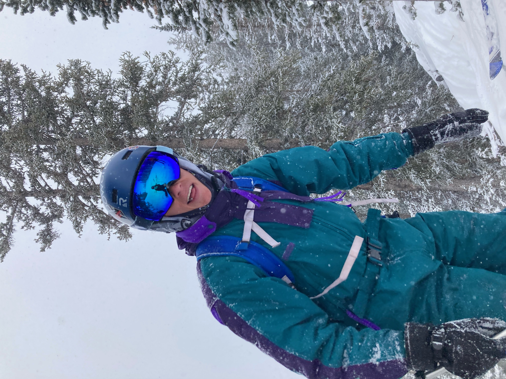

My name is Jaxon Powell. I'm a college undergrad student studying to get a Master's Degree in Computer Science. Currently I work as the Webmaster for the BYU Graduate Studies department where I've had the sole responsibility of building out the whole BYU Graduate Studies Website from their old Drupal CMS service over to their new Brightspot CMS service.
I've been working in the Technology Industry for several years now. Previous jobs include Technical Support Engineer, Computer Support Representative, Video Production and Editing Lead, Web Developer, and Webmaster.
Excited to announce I’m open for business and providing services on LinkedIn. Check out my LinkedIn services page for Web Design, Web Development, Video Production, and Video Editing services, or Contact me to learn more. To see an example of my freelance website work, check out the Bro Bro's 9 Frozen Treats Website that I designed and coded by hand.
For fun I love to Ski and to play soccer. These are two things that have been a huge part of my life for many many years. My favorite skiing video is called "The Ultimate Run" and features an Italian Freestyle Skier names Markus Eder. Also, feel free to contact me if you'd like to play soccer with me on a BYU intramural team!
I just got engaged to the love of my life and I couldn't be more content and happy. She's the most caring and tender person that I have ever known. She loves deeply, she dreams big, and she carries herself like she's the heir of the ancient greek goddess of love and beauty, Aphrodite. She lights up my world, my every moment, and I will forever treat and protect her like the treasure she is.
Now you know a little bit more about me. Please refer to the contact page if you have any questions.
Me and Some of my Work:
 



This is a video that I made while serving an LDS mission in Jacksonville, FL. I used primarily Adobe Creative Cloud applications to edit the video, compose the sound track, and to make the animations. I hope you enjoy.
Contact Information:
Jaxon Powell
Provo, Utah
jaxon.powell@myfakeemail.com
(801) 856-7309